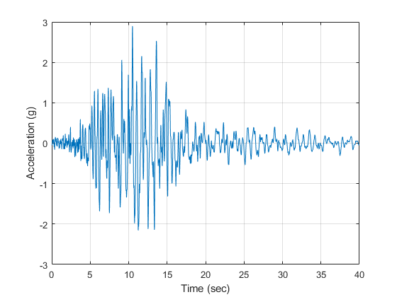
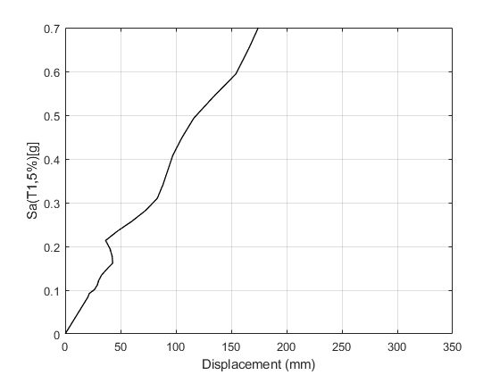

verification Incremental dynamic analysis of OpenSeismoMatlab
Contents
- Reference
- Description
- Earthquake motion
- Adjust earthquake motion to have D_5_75=8.3sec
- Calculate duration D_5_75 of adjusted earthquake motion
- Scale earthquake motion to have Sa(1 sec)=0.382g
- Calculate spectral acceleration of scaled earthquake motion
- Plot the acceleration time history
- Perform IDA analysis
- Plot the displacement time histories
- Copyright
Reference
Mashayekhi, M., Harati, M., Darzi, A., & Estekanchi, H. E. (2020). Incorporation of strong motion duration in incremental-based seismic assessments. Engineering Structures, 223, 111144.
Description
Incremental dynamic analysis (IDA) is performed for a non-degrading SDOF model with eigenperiod T=1 sec. The employed hysteretic model is a bilinear elastoplastic model used for non-degrading SDOF systems and is shown in Figure 17(a) of the above reference. An IDA analysis is performed with a ground motion the spectral acceleration of which resembles the red line of Figure 14 of the above reference, i.e. the ground motion must have Sa(1 sec)=0.382g (which is the Intensity Measure - IM) and the duration D_5_75 must be roughly equal to 8.3 sec. An acceleration time history with such characteristics is shown in Figure 16(c) of the above reference. In this example, an arbitrary ground motion acceleration is loaded, which is then adjusted so that the resulting time history has Sa(1 sec)=0.382g and D_5_75=8.3 sec. The adjusted time history is plotted in this example and can be compared to Figure 16(c) of the above reference. Based on the above problem statement, the median response curve of Figure 18(a) of the above reference is verified.
Earthquake motion
Load earthquake data
eqmotions={'LomaPrietaHallsValley90'};
data=load([eqmotions{1},'.dat']);
t=data(:,1);
dt=t(2)-t(1);
xgtt=data(:,2);
Adjust earthquake motion to have D_5_75=8.3sec
Switch
sw='arias';
Apply OpenSeismoMatlab
S1=OpenSeismoMatlab(dt,xgtt,sw);
Duration D_5_75 of the initially loaded motion
S1.Td_5_75
ans =
7.78
S.Td_5_75 must be roughly near 8.3 sec, as required in Mashayekhi et al. (2020) We manipulate the strong shaking part of the motion which corresponds to the significant duration so that S.Td_5_75 is increased to the desired value (8.3 sec)
id1=find(t==S1.t_5_75(1)); id2=find(t==S1.t_5_75(2)); xgtt(id1:id2)=0.8*xgtt(id1:id2);
Calculate duration D_5_75 of adjusted earthquake motion
Switch
sw='arias';
Apply OpenSeismoMatlab
S2=OpenSeismoMatlab(dt,xgtt,sw);
Duration D_5_75 of the adjusted motion
S2.Td_5_75
ans =
7.78
Scale earthquake motion to have Sa(1 sec)=0.382g
Switch
sw='elrs';
Critical damping ratio
ksi=0.05;
Period where Sa=0.382g
T=1;
Apply OpenSeismoMatlab
S3=OpenSeismoMatlab(dt,xgtt,sw,T,ksi);
Spectral acceleration of the adjusted motion at 1 sec
S3.Sa
ans =
1.42095612026039
Sa at 1 sec must be equal to 0.382g, so we scale the entire acceleration time history up to this level
scaleF=0.382*9.81/S3.Sa; xgtt=xgtt*scaleF;
Calculate spectral acceleration of scaled earthquake motion
Switch
sw='elrs';
Critical damping ratio
ksi=0.05;
Period where Sa=0.382g
T=1;
Apply OpenSeismoMatlab
S4=OpenSeismoMatlab(dt,xgtt,sw,T,ksi);
Spectral acceleration of the adjusted motion at 1 sec
S4.Sa
ans =
3.74742
Plot the acceleration time history
Initialize figure
figure() % Plot the acceleration time history of the adjusted motion plot(t,xgtt) % Finalize figure grid on xlabel('Time (sec)') ylabel('Acceleration (g)') drawnow; pause(0.1)
Perform IDA analysis
Switch
sw='ida';
Eigenperiod
T=1;
Scaling factors
lambdaF=logspace(log10(0.001),log10(10),100);
Type of IDA analysis
IM_DM='Sa_disp';
Mass
m=1;
Yield displacement
uy = 0.082*9.81/(2*pi/T)^2;
Post yield stiffness factor
pysf=0.01;
Fraction of critical viscous damping
ksi=0.05;
Apply OpenSeismoMatlab
S5=OpenSeismoMatlab(dt,xgtt,sw,T,lambdaF,IM_DM,m,uy,pysf,ksi);
Plot the displacement time histories
Initialize figure
figure() % Plot the response curve of the incremental dynamic analysis plot(S5.DM*1000,S5.IM/9.81,'k','LineWidth',1) % Finalize figure grid on xlabel('Displacement (mm)') ylabel('Sa(T1,5%)[g]') xlim([0,350]) ylim([0,0.7]) drawnow; pause(0.1)
Copyright
Copyright (c) 2018-2023 by George Papazafeiropoulos
- Major, Infrastructure Engineer, Hellenic Air Force
- Civil Engineer, M.Sc., Ph.D.
- Email: gpapazafeiropoulos@yahoo.gr